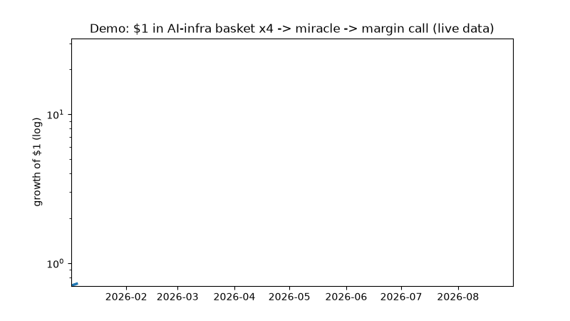
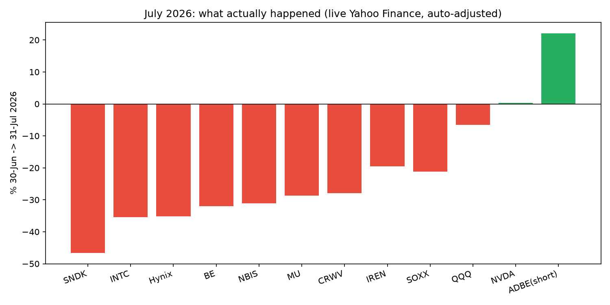
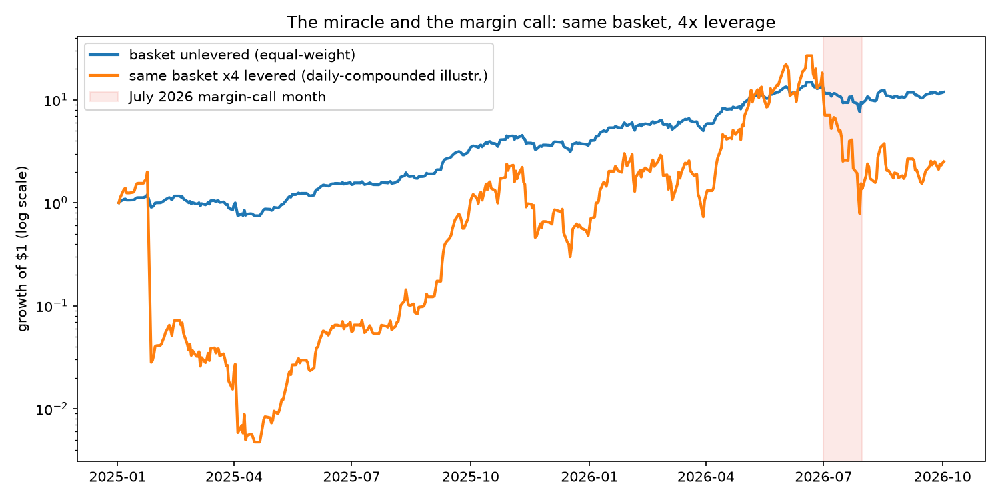

$45B → $10B in 30 days. Verified, charted, reproducible.
The forensic lab that replays the Situational Awareness AI-fund blowup (+439% then −67%) on live public market data — so you can see the leverage math with your own eyes and never repeat it.
CEO summary (30 seconds): a 24-year-old turned an AI thesis into $45B at +439% using ~4× borrowed money piled on the same AI-infrastructure stocks while shorting software. In July 2026 the longs fell 20–47% and the shorts rose 22% at the same time. At 4×, that is a margin call: banks demanded cash, the fund was forced to dump a $16B book to Citadel at a discount, landing at ~$10B (−67% in one month). Direction was arguably right long-term; survival was not — because leverage turns “right but early/late by a month” into ruin. This repo proves that sentence with downloadable numbers, pictures, and 4 green checkmarks.
🎬 Demo (GIF + video — same file, two ways to watch)

Above: auto-playing GIF (works directly in GitHub README). Below: same clip as MP4 with controls.
Want the 2-minute narrated version? Record your terminal with the script in docs/RECORDING.md (ffmpeg one-liner), upload to YouTube, and paste the link here + in README — thumbnail pattern included.
📊 The three pictures that make you a professional
1 — July 2026 bars: longs down, short up (the double-kill)

2 — Same basket ×4: miracle then margin call (log scale)

3 — Winners became losers: Jan–Jun vs July rotation